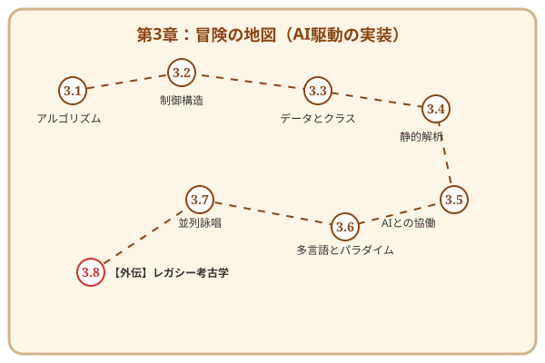

第3章 モダン・アルケミー——論理を具現化する実装の技法
この章で手に入れる力
第2章で「城の設計図（アーキテクチャ）」を描き終えたあなたは、ついに現場での「建築（実装）」に取り組む準備が整いました。
実装とは、抽象的な設計という「魂」を、具象的なコードという「肉体」に宿らせる儀式です。現代のアルケミスト（エンジニア）には、伝統的な計算機科学の知識に加え、AIという強力な「精霊」と共鳴し、爆速で高品質なコードを生み出す技術が求められます。
この章では、AI駆動の実装技法（Modern Implementation）を学びます。アルゴリズムという最小単位から、美しく淀みのないロジック、そしてAIへの「詠唱（プロンプト）」による自動生成まで——設計図を動くソフトウェアへと昇華させる力を身につけましょう。
冒険の地図

読了後のあなた
この章を読み終えると、あなたは以下のことができるようになります。
- 選ぶ: 目的に応じて最適なアルゴリズムとデータ構造を選択できる
- 書く: ネストが浅く、誰が見ても意図が伝わる美しい術式を構築できる
- まとめる: 関数・クラス・モジュールで処理を適切な粒度に構造化できる
- 評価する: AIが出力したコードの品質や効率を正しく判断できる
- 使役する: AIに的確な指示を出し、設計に忠実なコードを生成させられる
- 広げる: 一つの言語に縛られず、パラダイムを意識した開発ができる
- 操る: 非同期処理や並行プログラミングで、複数の処理を同時に進められる
設計図に命を吹き込み、動く魔法（ソフトウェア）を創造する旅を始めましょう。
さらに学ぶためのリソース（章全体）
- 📚 書籍: Jon Bentley『珠玉のプログラミング』（アルゴリズム的思考の古典）
- 📚 書籍: Dustin Boswell, Trevor Foucher『リーダブルコード』（可読性のバイブル）
- 📚 書籍: Andrew Hunt, David Thomas『達人プログラマー』（エンジニアの心構えと技法）
- 📚 書籍: Steve McConnell『Code Complete』（実装技術の集大成）